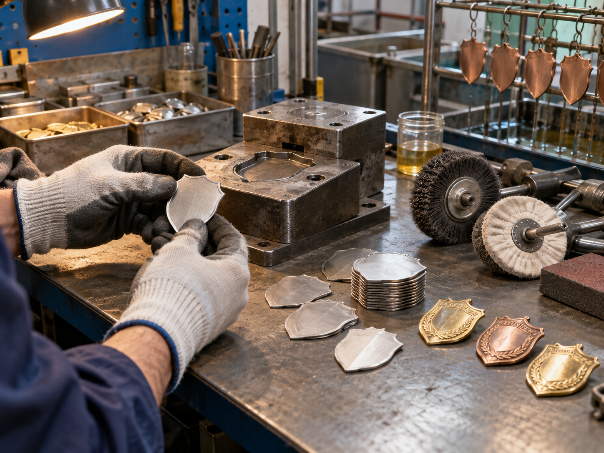

Professional metal badges are usually made through a sequence of design review, tooling, forming, finishing and assembly. This process is different from a simple DIY craft project because a manufacturer must repeat the same shape, relief, color and attachment across a full batch. The steps below explain what buyers should prepare and what happens on the production line.
1. Define what the badge needs to do
Start with the application. A logo badge for packaging may prioritize a small size and polished edges, while a uniform badge may need a secure backing type and a finish that stays readable under regular handling. Event badges, club emblems and collectible pieces can support more relief and decorative color.
Confirm the target width and height, overall shape, quantity, wearing surface, delivery date and packaging before the artwork is finalized. A practical starting range for many lapel-style badges is about 25–40 mm, but the right size depends on the detail in the artwork and how the piece will be used. The metal badge size and thickness guide explains how dimensions affect weight and detail.
2. Choose the metal badge manufacturing method
The production method controls the look and the detail that can be reproduced. The most common choices are:
- Die struck or stamped metal: brass or iron is pressed between dies to create a flat profile with raised and recessed detail. It works well for clean logos, lettering and official emblems.
- Zinc alloy casting: molten alloy is formed in a mold, making it suitable for irregular outlines, cutouts and deeper dimensional relief.
- Enamel badge production: recessed areas are filled with soft or hard enamel after the metal outline is formed. Choose soft vs. hard enamel based on whether you want visible texture or a smooth polished surface.
There is no single best metal for every project. Compare zinc alloy and brass custom badges when deciding between cast depth, stamped detail, weight and finish.

3. Prepare artwork that can be manufactured
Send the clearest version of the design you have, ideally a vector file or a layered PDF, PSD or AI file. The artwork review should identify the outside cut line, raised metal borders, recessed areas, enamel colors, printed areas, holes and back attachment positions.
Keep small letters, narrow gaps and fine lines open enough for the chosen badge size and process. If a detail is important, show it at the intended production scale rather than only on a large computer canvas. The factory can simplify a crowded design, but it is better to agree on those changes before the mold or die is made.
4. Make the die, mold and first sample
After the specifications are approved, the manufacturer creates the tooling. A die is used for stamped or die struck parts, while a mold is used for cast zinc alloy pieces. The first sample confirms the badge's silhouette, relief, thickness, surface texture and back construction.
For many custom metal products, sampling takes about 7 days after the artwork and production details are confirmed. Treat the sample as a production decision, not only a photo opportunity: check the edge, weight, color, plating, fine detail and attachment before approving bulk production.
5. Trim, polish and apply the finish
Formed parts are trimmed and polished before the surface treatment is applied. Common finishes include bright gold, silver or nickel plating; antique brass, antique silver or antique copper; black nickel; and matte or brushed treatments. Plating changes how relief reads, so the same artwork can feel formal, vintage or modern depending on the finish.
If the badge includes enamel, color is added to the recessed areas and then inspected for clean borders and consistent fill. Digital printing can be useful for artwork with gradients or photographic detail, while raised metal and recessed metal can create contrast without adding color.
6. Add the right badge backing
The back should match how the badge will be worn or installed. Butterfly clutches are common for lightweight lapel badges. Safety pins suit larger fabric badges. Magnetic backs avoid piercing uniforms, while screw posts, adhesive backs or a custom plate can work better on bags, signs and hard goods.
Always confirm the backing before the final sample because it affects the badge's balance, clearance and packaging. For a quick comparison, review the site's guide to metal pin backing types.
7. Inspect the finished batch
Quality inspection should compare the bulk pieces with the approved sample. Check dimensions, outline accuracy, relief clarity, plating consistency, enamel fill, print alignment, sharp edges, post position and packaging. If the badge will be used on uniforms or in public-facing roles, confirm that the attachment is secure and comfortable for repeated wear.
BadgeCraft Metalworks typically works from a starting MOQ of 100 pieces per design. Bulk production normally takes about 15 days after sample approval, with timing adjusted for quantity, multiple finishes, variable names or special packaging. The full metal badge manufacturing process shows how artwork review, production and inspection fit together.
How much does it cost to make metal badges?
The main cost drivers are tooling, metal choice, badge size and thickness, quantity, number of colors, plating, backing, packaging and shipping. A complex cast badge may require more tooling than a simple die struck badge, while a larger order can spread the tooling cost across more pieces. Use the custom metal badge pricing guide to prepare a more comparable quote request.
Metal badge quote checklist
To get an accurate recommendation, send:
- Artwork and any required brand colors or reference samples
- Target size, thickness, shape and quantity per design
- Preferred base metal, relief depth and plating or surface finish
- Enamel, printing or other color requirements
- Backing, packaging and delivery requirements
- Target sample date and final delivery date
Ready to make a production-ready badge? View custom metal badge options or send the artwork for a quote.